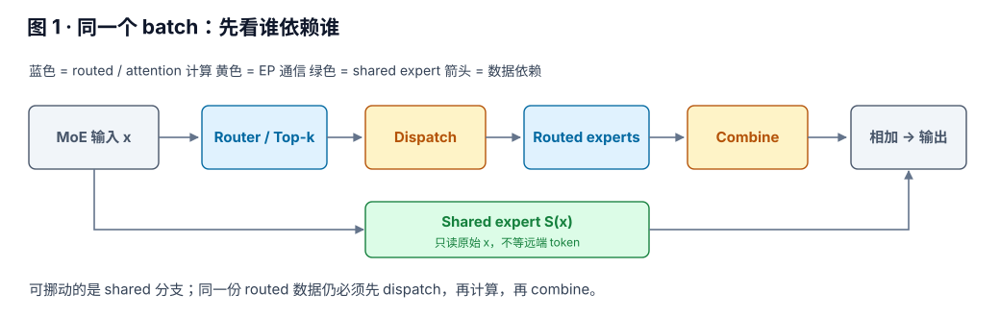
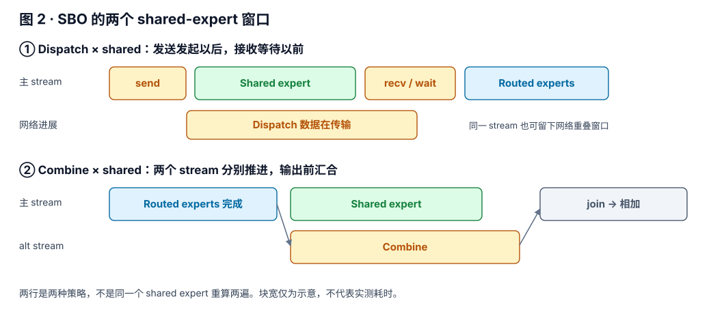
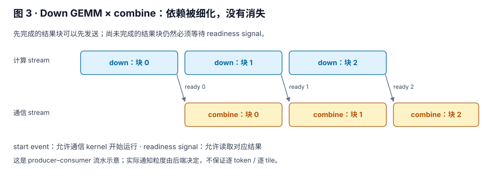
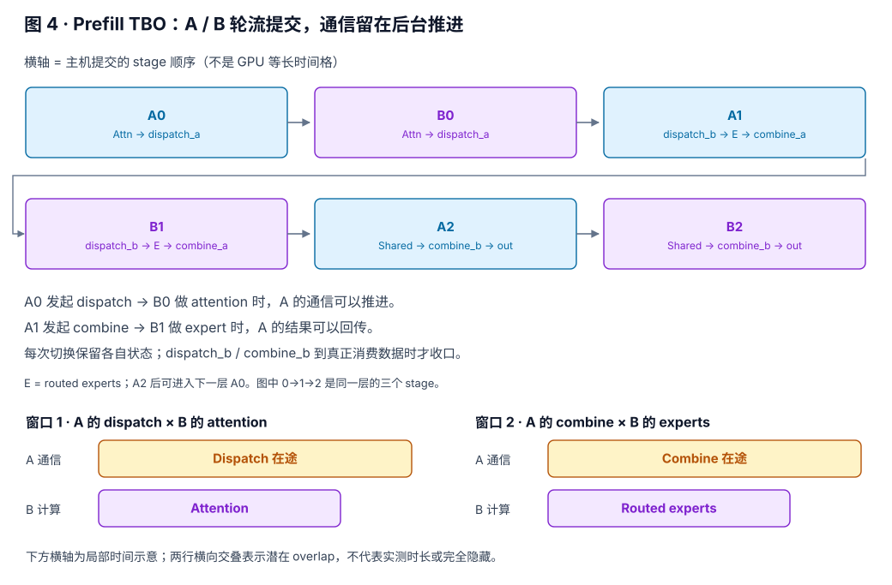
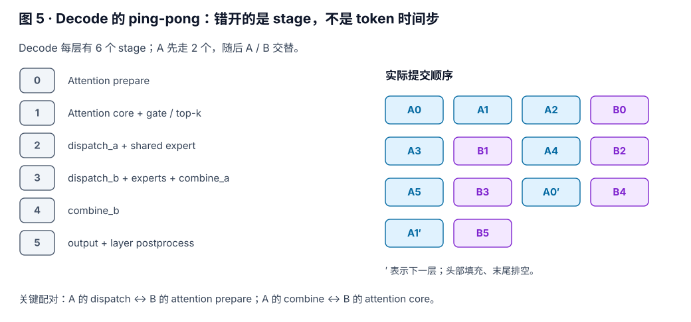
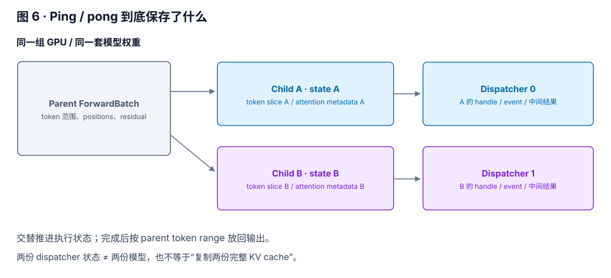

一、先分清三个 overlap
看 SGLang 的 overlap，只要追问两件事：谁和谁同时干活？谁必须等谁？ batch 数、stream 数、buffer 数是三件不同的事。
| 名字 | 重叠的两端 | 有没有切模型输入 batch |
|---|---|---|
| CPU/GPU overlap scheduler | CPU 准备 / 处理批次，与 GPU forward 重叠 | 不以切成两个 micro-batch 为前提 |
| Single-Batch Overlap（SBO） | 同一 batch 的 shared expert × 通信；或 down GEMM × combine | 不需要为了 SBO 把 batch 切成 A / B |
| Two-Batch Overlap（TBO） | A 的通信 × B 的计算，再交换角色 | 通常把一次 forward 的 batch 切为两个 child batch |
这里的 single batch 不等于 batch size = 1。一个 batch 可以装很多请求；SBO 说的是不用另一个 micro-batch 来填空。同样，TBO 的 two 也不是“自回归的第 t 步和第 t+1 步”：后一个 token 依然依赖前一个 token 的结果。
本文主线是 DeepSeek 风格 MoE + EP + DeepEP。SGLang 还有模型专属、attention、存储预取等 overlap；不能把下面的调度表套到所有模型与后端。文中的源码链接固定到 c9a8fba991af（2026-09-15），机制与这一版本的可用性分开说明。
二、一层里，哪些依赖真的绕不过去
接着 EP 那篇文章的 dispatch / combine 往下看。对某个 MoE 输入 x，routed 分支要走：
x → router / top-k → dispatch → gate-up GEMM → activation → down GEMM → combine
└──────────────────→ shared expert S(x) ──────────────────────────────────→ 相加
Dispatch 把 token 发到 expert 所在的 rank；combine 把 expert 输出送回原属 rank，并完成所需的加权聚合。对于同一份 routed 数据，没收到 token 就不能算 expert，expert 没产出就不能发送结果。把这三个操作放进三个 stream，也不会改变依赖。
但 shared expert 读的是本地原始输入 x，不需要等 routed dispatch。于是同一个 batch 内天然存在一条独立支路。另一个机会在 down GEMM：如果通信只需要“已经完成的那块结果”，就可以把整张量依赖细化成分块依赖。
这正是 SBO 的两个来源：独立分支并行，以及生产者—消费者流水。源码入口是 DeepseekV2MoE.forward_deepep 与 SboFlags。
三、Single-Batch Overlap：具体盖住什么
3.1 Dispatch × shared expert：发送以后再去等
最直观的安排是：先把 dispatch 发出去，趁远端传输尚未收口，算 shared expert，再接回 routed 分支。不是 shared expert 帮忙算远端 expert，而是它本来就有自己的活。

在这一版 DeepSeek 路径中，enable_dispatch_shared_one_stream_overlap() 的条件是 SBO 开启且不是 Blackwell。模型通过 register_deepep_dispatch_hook 把 shared expert 插进 dispatcher 的窗口。Low-latency dispatcher 的 dispatch_a 返回接收 hook / event，dispatch_b 才执行 hook 或等待完成。
One-stream 不等于没有 overlap。 同一个 CUDA stream 上的计算 kernel 有顺序，但异步网络传输可以在两个提交点之间继续推进。这里藏的是网络等待，不是在同一 stream 上强行让两个串行 GEMM 同时执行。窗口由通信后端提供，不是随便把 Python 函数换个顺序就能得到。
对应源码：dispatch hook；dispatch_a / dispatch_b。
3.2 Combine × shared expert：把 shared 挪到末尾
另一种安排是先推进 routed experts，随后让 combine 在 alternate stream 上跑，主 stream 算 shared expert，最后等两边都完成再相加。两种安排只改变 shared expert 的放置位置，数学上仍然是同一个 S(x)。
实现上，post-dispatch hook 准备 overlap 参数；pre-combine hook 提交 shared 计算；combine 端在 alt stream 上等待约定的 event，再执行通信；combine 收口时补齐 stream 依赖。Python 中先调用 shared、再调用 combine，不代表 GPU 必须等 shared 完成才开始 combine：前者是向主 stream 提交，后者可以向另一个 stream 提交。
若不启用 down-GEMM 流水，event 记录在 down 完成之后、shared 之前；于是 combine 只等 routed 输出，不必连 shared 一起等。这就是 event 应该放在哪里的实际意义。分支条件还会受 SGLANG_BLACKWELL_OVERLAP_SHARED_EXPERTS_OUTSIDE_SBO 影响，不能只看 --enable-single-batch-overlap 一个参数。
对应源码：combine/shared hooks；combine stream 同步。
3.3 Down GEMM × combine：边算边发
这里看上去有矛盾：combine 依赖 down GEMM，怎么还能重叠？答案是不能读没完成的块，但可以先发送完成的块。

compute_overlap_args() 同时构造 DownGemmOverlapArgs 和 CombineOverlapArgs。两边共用 signal：计算侧产生进度，通信侧据此判断哪些输出可读。start event 解决“通信什么时候可以开始跑”，signal 解决“具体哪块可以读”，这两个同步层次不能合并。
在这个 commit，开关允许 flashinfer_cutedsl，或者非 Blackwell 的 deep_gemm 分支；不是任意 grouped GEMM 都支持。Blackwell 和非 Blackwell 分配 signal 的形状、类型也不同，因此图里用“结果块”泛指后端约定的通知粒度，不把它写死成某个 tile 大小。
而且通信 kernel 也会占资源。代码为通信与计算划分 SM 预算：若环境变量没有覆盖，通信预算取 Blackwell 的 32 或其他分支的 3，计算取总 SM 数减去该值。这是此实现的默认预算，不是所有 GPU 都该照抄的调优答案。
对应源码：compute_overlap_args；DeepGEMM start event；low_latency_combine 的 signal 参数。
3.4 开关之外还有单 batch 并行
如果把“单 batch overlap”理解成广义的同批次并行，答案还不止 SBO 开关。在 forward_deepep 的非 SBO 分支里，满足 alt stream 存在、shared expert 未融合等条件时，也会把 shared expert 放到另一条 stream，和 routed 分支并行，最后等 shared_event。
因此关闭 SBO 不等于所有单 batch 并行都关闭。反过来也有例外：这个路径在 breakable CUDA graph 下会提前 join，源码明确说明那时 shared experts 不再与后续工作重叠。分析 trace 时要看实际分支，不能用参数名字替代运行事实。见 非 SBO 的 shared 分支。
四、Two-Batch Overlap：拿另半个 batch 填空
如果同一 batch 内独立工作太少，shared expert 太短，盖不住通信，怎么办？把一次 forward 的输入切成 A、B 两个 micro-batch。A 在等通信时，就推进 B；B 在等时，再回到 A。
这两个 micro-batch 通常在同一组 GPU、同一套权重上执行。EP rank 的含义不变，每个 micro-batch 仍然要走自己的 dispatch / expert / combine。改变的是执行顺序，以及每次计算看到的 token 数。
4.1 Prefill：三个 stage，A / B 交替
DeepSeek prefill 策略把每层操作切成三个 stage，tbo_delta_stages = 0：
| Stage | 这个 micro-batch 做什么 | 末尾留下什么 |
|---|---|---|
| 0 | 准备 attention → attention → 准备 MLP → gate / top-k → dispatch_a | 发起 dispatch，然后 yield |
| 1 | dispatch_b → routed experts → combine_a | 先收口 dispatch；算完后发起 combine，再 yield |
| 2 | shared experts → combine_b → output / postprocess | 收口 combine，合并输出，进入下一层 |

第一个窗口：A0 发出 dispatch，随后 B0 的 attention 可以覆盖它的一部分。第二个窗口：A1 发出 combine，B1 的 expert 计算可以覆盖它的一部分。Shared expert 自己也可能占据通信窗口，所以 TBO 不是只有 attention 能盖通信。
这里的 dispatch_a / dispatch_b 是通信的两个阶段，不是 micro-batch A / B。A 有自己的 dispatch_a 和 dispatch_b，B 也有。把这两组 a/b 混起来，整个时间线就会读反。
对应源码：DeepSeek prefill operations strategy。
4.2 Decode：切得更细，先让 A 跑两段
Decode / target verify 的策略改成六个 stage，tbo_delta_stages = 2。因为它把 attention prepare、attention core、通信发起与收口拆得更细，可以把两边对到不同的窗口。

从这张图可以读出两个具体配对：A2 发起 dispatch 之后，B0 做 attention prepare；A3 发起 combine 之后，B1 做 attention core、gate 与选 expert。之后 A4 / B2 等阶段继续交替，跨层维持错位。首部需要填流水，末部需要排空，不可能从第一条指令到最后一条指令都重叠。
“Two batch overlap”没有一张适用于所有场景的固定时间线。 上面两张表来自 DeepSeek V2/V3 风格 decoder 的 strategy；当前文件还定义了其他模型的策略。要解释某条 trace，先选对模型与 forward mode，再展开它的 stage 列表。见 DeepSeek decode strategy。
五、Ping-pong：交替的是执行状态
YieldOperation 是 host 侧的分段标记。Executor 把操作列表按这个标记切成 stage，然后轮流调用 A、B 的 next()。它不会自动暂停一个正在执行的 CUDA kernel，也不意味着每次 yield 都做 device synchronize。
# 按 operations.py 简化；不是可独立运行的程序
for _ in range(delta):
A.next()
for _ in range(num_stages - delta):
A.next()
B.next()
for _ in range(delta):
B.next()CPU 在轮流提交工作；GPU stream、异步通信以及 event / hook 决定真正的并行与等待。单看 Python 调用相邻，既不能证明重叠，也不能证明串行。

保存的东西包括各自的 hidden states、residual、positions、attention metadata，以及 dispatch/combine 的 handle 与完成状态。MaybeTboDeepEPDispatcher 在 TBO 下创建两个 inner dispatcher，通过 tbo_subbatch_index 选择，避免 A 的在途状态被 B 覆盖。输出再通过 tbo_parent_token_range 放回原来的位置。
这就是“ping / pong”在这一层最有用的含义：两套在途状态交替推进与复用。底层通信库也可能用双 buffer，但不能据此声称 SGLang 复制了两份完整模型，或者每层复制两份完整 KV cache。底层 buffer 的数量和布局要继续看对应后端。
对应源码：execute_overlapped_operations；每个 executor 的独立 state；输出合并与双 dispatcher。
5.1 怎么切，才能真的有另一半可做
Decode 通常每条请求贡献一个 token，因此按序列数量近似对半切；target verify 还要考虑每条序列的 draft token 数。Prefill 各请求长度不同，按请求数对半切可能非常不均。比如长度 [8192, 128, 128, 128]，切两条对两条得到 8320 / 256 token，B 很快做完，剩下依然是 A 在等。
当前实现先寻找接近 token 总量对半的序列边界；分布太偏时，可进入 two-chunk 路径，在 token 中点切，允许跨过某条序列内部。--tbo-token-distribution-threshold 默认 0.48，设 0 关闭 two-chunk；代码还有针对退化小批次的回退。
这时 A / B 不能再被口头描述成“两个完全无依赖的请求集合”。同一条 causal 序列的后半段仍要看到前半段 K/V，attention 的 metadata 与执行顺序必须保持这个约束。切 token 只是让工作更平衡，不会取消 causal 依赖；token 均衡也不等于 attention 工作量严格均衡。
此外，DP ranks 会协商是否能跑 TBO，并要求有效 forward modes 一致；当前 preparer 对 draft worker 直接跳过。一个参数被设为 true，不代表所有批次都走同一条 overlap 路径。见 切分策略、DP 协商与 forward batch 准备。
六、CPU/GPU overlap scheduler：另一个维度
SGLang 的 event_loop_overlap 重叠的是主机端调度与设备端计算：先选批次、提交当前 GPU 工作，然后处理上一批的结果。不是把 GPU 上两个完整 forward 无条件并发，也不是前面 TBO 的两个 child batch。
CPU：选择 / 提交 batch n ── 处理 batch n−1 的结果 ── 准备后续工作
GPU： └──────── forward n ────────────┘自回归依赖通过 GPU 侧结果缓冲与输入解析继续保留。下一步要用上一步的 token，不能因为 CPU 想提前调度就凭空得到它。现在的 resolve_forward_inputs 可以从 FutureMap.output_tokens_buf 构造实际输入；有依赖的 sampling / 特殊批次仍会走相应同步与禁用条件。
所以一条请求也可能受益于 CPU/GPU overlap；但它不会凭空提供 TBO 所需的两份独立计算。反过来，GPU 内部已经做 TBO，主机侧仍然可能存在调度空隙。两者解决的瓶颈不同。
对应源码：event_loop_overlap；resolve_forward_inputs。历史背景见 SGLang v0.4 的 scheduler 介绍。
七、重叠的收益，为什么不是白送的
只考虑一个有独立工作可盖住的窗口，设通信耗时 C、计算耗时 G。串行花 C + G；无资源竞争、完全重叠的理想下界是 max(C, G)，最多藏住 min(C, G)。这个式子描述局部窗口，不是整层，更不是端到端服务吞吐。
局部窗口的理想节省 ≤ min(C, G)
实际净节省 ≈ 被隐藏的等待 − 资源竞争 − 拆分/同步开销 − 小 GEMM 的效率损失SBO 不为了 overlap 缩小 micro-batch，但 shared 分支长度有限，SM/HBM 竞争仍然存在。TBO 找到了另一半计算，却把 GEMM 的 M 维变小了：两个半 batch 的计算时间加起来，可能比一个大 batch 更长。再加上 padding、launch、buffer 生命周期与流水首尾气泡，不是看到彩色块重叠就一定更快。
| 现象 | 先检查什么 |
|---|---|
| 通信块仍然很长，但整步变快 | 可能已成功隐藏；看关键路径，不只看通信 kernel 自身时长 |
| 两条 stream 很忙，整步反而变慢 | SM / HBM 竞争；通信是否挤占 GEMM，或反过来 |
| A / B 一边早早空下来 | token 数、attention 长度、expert 热度、跨 rank straggler |
| TBO 小 batch 退化 | 半批 GEMM 效率、额外 launch / padding；可覆盖的窗口是否足够 |
| 显存没有减半 | 权重与 KV 不会随 TBO 减半；workspace、padding、在途激活与 graph 池另算 |
在两条资源通道、总工作不变的理想模型下，(C + G) / max(C, G) ≤ 2。现实比较里，能容纳的 batch、kernel 效率与工作负载也会改变，所以“2×”既不是保底，也不是所有端到端对比的普适上限。官方早期 大规模 EP 文章提供了特定部署下的消融；本文没有新增 GPU benchmark，所有时序图都只表达依赖与调度。
八、落到当前 SGLang：怎么开，怎么验
在已经验证可运行的模型 / EP 配置上，分别比较以下增量；不要把三行一次性全加上：
# Baseline：不加 SBO / TBO 开关
# SBO 对照：
--enable-single-batch-overlap
# TBO 对照：
--enable-two-batch-overlap
# 可选：仅研究按序列切分的 TBO，禁用 two-chunk
--tbo-token-distribution-threshold 0两个开关不是收益相加的承诺。 TBO 走 operations strategy，SBO 的很多 hook 装在模型的另一条 forward 路径；要证明组合生效，必须确认所选模型 / runner / a2a backend 实际走到了哪些 hook，不能从 flags 推导出“同时开就两倍收益”。
8.1 这个 commit 的明确边界
| 组合 / 条件 | 源码里的实际行为 |
|---|---|
| CUDA SM90（H100 / H200）+ SBO | 初始化直接抛 ValueError，报错指出最新 sgl-deep-gemm wheel 不支持；保留的非 Blackwell 实现分支不等于此版本能直接启用。 |
| a2a backend = deepep_v2 + SBO / TBO | 明确拒绝：尚未实现 overlap hooks。不要把 deepep 与 deepep_v2 当同一个兼容矩阵。 |
| SBO down-GEMM/combine | SboFlags限定 runner / GPU 分支，还需底层通信与量化路径支持。 |
| TBO 的每一个 forward | 运行时协商决定是否进入；普通 extend 配 low-latency a2a 等情况受到限制，模型还需对应 operations strategy。 |
这些是 c9a8fba991af 的事实，不是对所有历史版本或未来版本的结论。特别是旧文章里的 Hopper SBO 机制，和今天这个 wheel 组合的启动限制，可以同时成立。
8.2 看一次 trace，至少回答四件事
- 哪个窗口重叠了？ Shared × dispatch、shared × combine、down × combine，还是 A 通信 × B 计算？不要只数 stream。
- 同步放在哪？ Dispatch 的等待是否延后到消费前；combine 是否提前等了 shared；是否有 device-wide 同步把窗口抹掉。
- 关键路径缩短了吗？ 比相同 token 工作量下的完整 step 时间，同时观察 split 后 GEMM、通信尾巴、最慢 rank 和峰值显存。
- 服务指标与正确性还在吗？ 固定硬件、权重、量化、EP/TP、请求分布和并发，对比吞吐、TTFT、ITL 及尾延迟；验证数值/任务精度。执行路径变了，不自动承诺 bitwise identical。
追代码时可以按这个顺序：batch 怎么切 → stage 怎么排 → 通信何时发起 / 何时等待 → 谁提供独立计算 → 最后在哪里汇合。这五步能把大多数“开了 overlap 却没变快”的问题定位到具体位置。
源码索引与延伸阅读
所有实现引用都固定到同一 commit，避免主干行号漂移。本文图为依据源码重新绘制的 SVG；延续 EP 原文的分层讲解与彩色数据流表达，不复用它的图或实验数据。
- SBO：开关、SM 预算、event 与 signal
- 模型侧：shared expert hooks 与 forward 分支
- TBO：prefill / decode 的 stage 列表
- TBO executor：预热、交替推进、排空
- TBO：切分、DP 协商、child batch 与 dispatcher
- DeepEP：low-latency dispatch / combine
- SGLang 官方 Expert Parallelism 文档（概览；实际兼容性以固定版本源码为准）
- SGLang 团队：Large-scale EP / TBO（2025-05-05）
- 本站 EP 参考文章（原作者 yamy1234，本站为镜像）